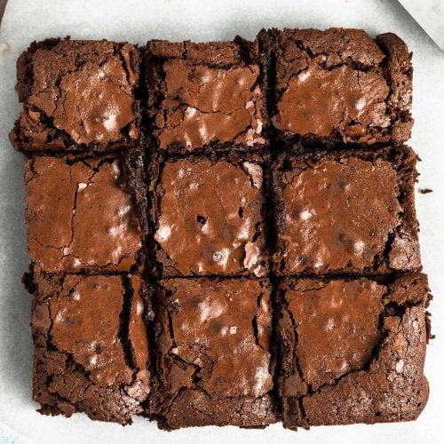

Double Chocolate Brownies

Description
Better than storebought AND just making from the box! (Though we still start with the box). Make a batch of these and enjoy the chewy goodness.
Ingredients
- 1 box brownie mix + the Ingredients it calls for (eggs, oil, water)
- 1/2 c. Semi sweet Chocolate Chips
Steps
- Literally just make the brownies according to the box, and then add the Chocolate Chips.
- Cook according to the instructions on the box.
These brownies can be frozen, and are suprisingly good topped with blueberries!
Return to Home Page
More Plebian Recipes